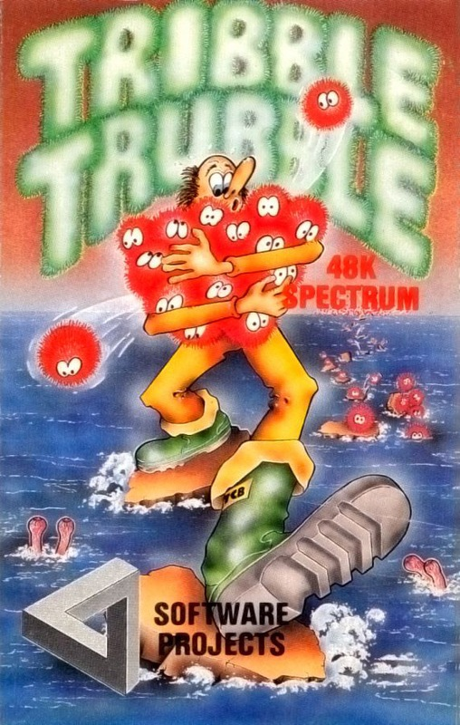
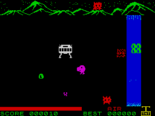

Tribble Trubble


{kind=link}

| Publisher: | Software Projects |
| Price: | £5.95 |
| Year: | 1984 |
| Source: | CRASH, Issue 4 |

Jim Scarlett wrote the very good Doombugs, which was published by Workforce and seems to have been rather underrated. That was an original but fairly simple game to play. Tribble Trubble is a highly original game and a very difficult one to play.
For those who remember the Star Trek series, it may be possible to recollect an episode called ‘The Trubble With Tribbles.’ Tribbles were cuddly, cute but rather troublesome creatures that began multiplying on board the Enterprise until they posed a serious threat to the ship. In this new game they are still cute and cuddly and even more of a menace. The hero of the piece is Brian Skywalker (yes, Luke’s little known brother), and he’s a Tribble Farmer on the planet Noom. When on a mission to round up wild tribbles, his Noomrover runs out of fuel and Brian is forced to herd his tribble back to base on foot.

out of trouble, builds a bridge
of stones and goes quietly mad.
This trek takes him and his tribblesome herd through five sheets of sheer hell. In the first Brian is stranded near his Noomrover at the foot of Firebug Mountain, beside a river which he must cross. Gems sparkle occasionally and then he can dash up and dig out a rock, nudge it into position and fling it into the river. The first stones sink down, so he has to make two lines of three rocks on the bottom, and then another two rows of three on top. When this is done, it will be possible to take a tribble across to the next screen. The problems, however, are soon manifest. Tribblesome trouble starts when the tribble, never content to stay in one place, start to emerge from the Noomrover. The Firebugs that live on the Mountain like eating tribbles, so they start to move in. Tribbles also run straight at the nearest water and drown.
Fortunately, they are fairly obedient-ish, and will follow Brian if he’s near. This lets him lead them up and pop them back into the top of the Noomrover.
In sheet two, The Goofer Desert, the tribbles eat goofers but are killed by cacti, and Brian sometimes gets caught up too. Then there’s the Spheroids’ cave. Spheroids, too, like tribbles, and in the Snappers’ Lair, the Snappers like tribbles, while the tribbles run off everywhere after the mushrooms. In the last screen you must get all the escaped tribbles back into their pen before the air runs out. In fact the only ‘good’ thing about this game is that for once you can play the part of a hero who is practically indestructible!
CRITICISM
‘Keeping tribbles out of trouble is a very difficult task, as they seem to enjoy exploring a great deal, unaware of what hazards are around them, or what Brian is doing. All the figures in this game are detailed and very well animated. Every screen is colourful and enjoyable to play — which doesn’t mean the game is easy, in fact it is difficult and will take ages to get through. The tunes are excellent as well. It’s a MUST BUY!!’
‘Brian Skywalker stands every chance of becoming a Spectrum hero. He is simple in shape, nicely drawn and immediately likeable, like Miner Willy or Horace. The tribble, though much tinier, are also beautifully drawn and animated, and look suspiciously like mini Brians. On the first screen, keeping an eye out for the brief twinkle which denotes a gem to be dug for, whilst keeping the next emerging tribble out of trouble, takes all your concentration. When a gem is dug, a rock pops up somewhere else that may be nudged into the river. All the movements in the game are delightfully done, and the pixel movement graphics are first-rate throughout. Compelling and enjoyable.’
‘I had to break off to get the review done, but there are still three screens to fight through before this game is conquered, and even then I will have to go back. All I can say is if tribble farming is this much trouble, I think I’ll stay here and play computer games! Excellent sound, colour and graphics, an excellent game and very unusual too.’
COMMENTS
| Control keys: | Q/Z up/down, I/P left/right and zero to ‘dig’ |
| Joystick: | Kempston |
| Keyboard play: | Good, very responsive |
| Use of colour: | Excellent |
| Graphics: | Ultra-smooth, detailed and very fast |
| Sound: | Excellent, great tunes |
| Skill levels: | 1 |
| Lives: | 3 |
| Screens: | 5 |
| General rating: | Excellent, highly recommended. |
| Use of computer: | 89% |
| Graphics: | 91% |
| Playability: | 92% |
| Getting started: | 86% |
| Addictive qualities: | 93% |
| Value for money: | 92% |
| Overall: | 91% |